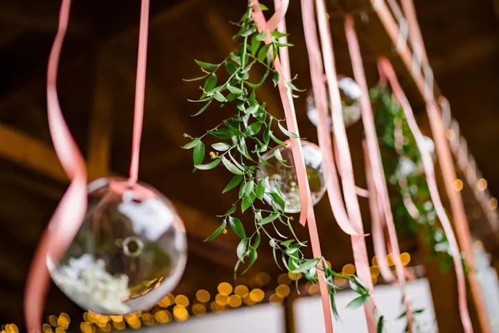
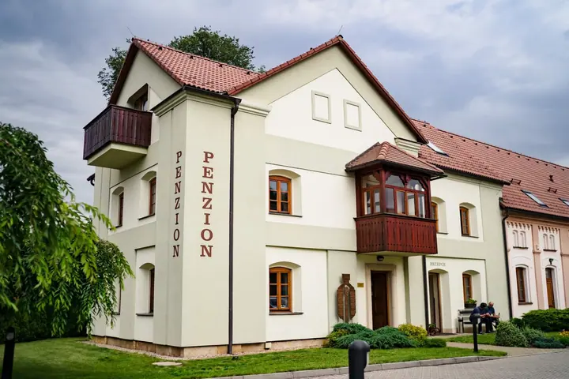
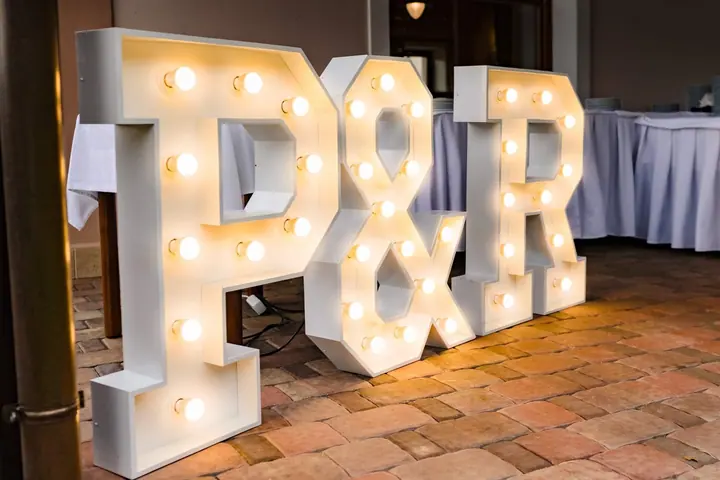

01 / 04
Svatby na klíč
Svatbu připravím od prvního nápadu až po poslední tanec. Mám po boku spolehlivý tým a dodavatele, pod jejichž práci bych se sama podepsala.
Zeptat se na termín→




Svatby a večírky na klíč, s plánem B
Zeptat se na termín →(01) Ahoj
Jmenuji se Sabina Kvak a od roku 2014 profesionálně organizuji společenské akce na klíč . Připravuji svatby, firemní večírky i soukromé oslavy a pracuji s týmem a dodavateli, kterým věřím .
(02) Co fotím
01 / 04
Svatbu připravím od prvního nápadu až po poslední tanec. Mám po boku spolehlivý tým a dodavatele, pod jejichž práci bych se sama podepsala.
Zeptat se na termín→02 / 04
Firemní akce organizuji na klíč. Roky v korporátu mě naučily, že se počítá jenom výsledek: buď je klient spokojený, nebo ne.
Zeptat se na termín→03 / 04
Narozeniny, výročí nebo jiná oslava, kterou si chcete užít s hosty a ne s organizací. Šetřím váš čas, peníze a nervy.
Zeptat se na termín→Dále nabízím
Připravuji i VIP galavečery a komerční či charitativní happeningy. Jsem mistr improvizace a vždy mám v záloze plán B.
↗(03) Portfolio
Kliknutím fotku zvětšíte · fotografie jsou ilustrační
(04) Postup
Od první zprávy po hotovou galerii.
Krok 1 z 4
Sejdeme se a probereme, jakou akci si představujete, pro koho je a co od ní čekáte.
Krok 2 z 4
Připravím koncept a doporučím ověřené dodavatele, pod jejichž práci bych se sama podepsala.
Krok 3 z 4
Dotáhneme detaily od výzdoby po časový plán dne. Na všechno mám připravený i plán B.
Krok 4 z 4
S mým týmem koordinuji celý průběh na místě, abyste se vy mohli věnovat hostům a sobě.
Od první schůzky si v hlavě skládám film vaší akce.
(05) Za objektivem
Jmenuji se Kvak. Opravdu, a klidně vám na to ukážu i občanku. Od roku 2014 organizuji společenské akce na klíč: svatby, firemní večírky, soukromé oslavy, ale i VIP galavečery a komerční či charitativní happeningy.
Roky práce v korporátu mě naučily, že k cíli může vést víc cest, ale počítá se jenom výsledek. Buď je klient spokojený, nebo ne. Nic mezitím. Proto mám vždy v záloze plán B a po boku spolehlivý tým, který zvládne každou situaci.
Spolupracuji s dodavateli, kterým věřím, a doporučuji jen profesionály, pod jejichž práci bych se sama podepsala. Vy tak ušetříte čas, peníze i nervy a já si mezitím od začátku spolupráce v hlavě skládám film vaší akce.
Sabina
Sabina Kvak · Organizátorka svateb a společenských akcí
Postarám se o celou organizaci od prvního nápadu přes výběr dodavatelů a výzdobu až po koordinaci v den akce. Vy jen schvalujete a užíváte si.
Svatby, firemní večírky, soukromé oslavy, VIP galavečery i komerční a charitativní happeningy.
Ano, pracuji s dodavateli, kterým věřím a jejichž práci znám. Doporučím vám jen ty, pod které bych se sama podepsala.
Sídlím v Hradci Králové a právě přijímám rezervace na rok 2026. Napište mi nebo zavolejte a domluvíme se na úvodní schůzce.
(07) Kontakt
Napište pár vět o tom, co si představujete, a termín, který se vám hodí.